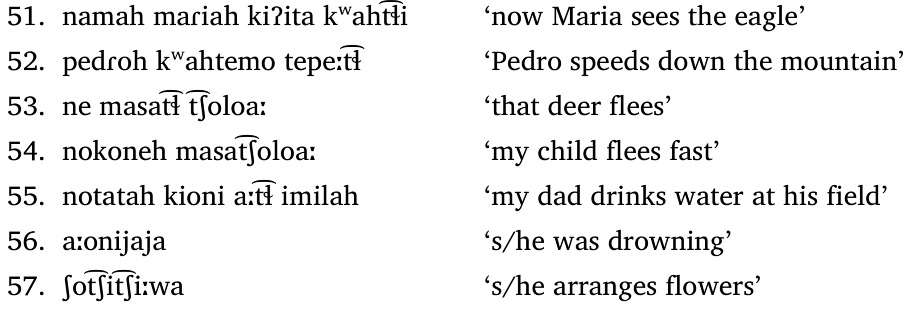

Linguistics 120: Morphology
Dr. Will Styler - Spring 2019
Administrative Notes
My Friday Office Hours are cancelled
But I’ll have an extra hour today, after class
I won’t be able to respond to emails over the weekend
Amber will give a guest talk Friday
- Clickers will be used!
Clicker scores will be finalized early next week along with SONA
- If I’ve asked you to remind me to change anything, now’s the time
Graduating seniors, come see me after class!
Grades
There’s a good chance that I’ll be doing a bit of curving (by HW or overall)
Don’t be too disheartened if your current grade is feeling low
- Bad grades will still be possible, but I want good students to get good grades
The goal of difficult assignments is to challenge you, not destroy you
Homework 4 is due Friday
- You’ll need to work alone on this
Please fill out your CAPE evaluations
It makes a difference, for me and future students
Be honest, but also be fair
Today’s Plan
What more awaits you in Morphology
What we have learned
The secret to great linguistic analysis
The Morphology we missed
Quarters are short
There’s always a balancing act
“If I focus on this, I’ll lose that”
“… but I want to talk about case!”
More time with data is good
- … but takes away time for theory
Morphology is so broad in interactions that you can’t cover it all!
There remain many topics for you in morphology!
(We had to save something for grad school, right?)
So, I’ll give a sneak preview of some of the things we’ve missed
Compositionality
Compositionality
“Every complex expression can be exhaustively broken down into minimally meaningful pieces, with no units of form or meaning left unaccounted for”
Are there meanings that are ‘unaccounted for’?
Are there words which have more forms than meanings?
Are there words which have more meanings than forms?
Are there words whose meaning cannot be predicted from the forms?
Nahuatl to the rescuetl

It sure seems like there’s non-compositional meaning!
‘Drink-water’ becomes ‘drown’
- … but only when incorporated!
‘Flower-make’ becomes ‘arrange flowers’
- … but only when incorporated!
‘deer-flee’ becomes ‘skittishly and quickly run away’
“… but maybe those are just morphemes with different meanings!”
- Well, OK, but how about…
Phonaesthemes
“Would you like to buy a new Glimp? It…”
Sharpens knives.
Lights up your house.
Tastes good.
“Damnit, I left my meb in the car!”
I won’t be able to sew as well.
I’ll be unable to fill my bird feeders
What if there’s a fire?!
“Have you seen my snofter?…”
My nose is sore.
I dropped a glass.
It’s cold in here.
“I got diabetes. It must be from drinking all that…”
Blurge cola
Mabler cola
Wika cola
“You Mom is plafty.”
“Them’s fighting words.”
“Maybe?”
“Thanks!”
“Your Mom is slafty.”
“Them’s fighting words.”
“Maybe?”
“Thanks!”
Phonaesthemes
“Frequently recurring sound-meaning pairings that are not clearly contrastive morphemes”
- First defined by Ben Bergen (Bergen 2004), who is at UCSD!
Ben Bergen

Phonaesthemes in English
gl- ‘light, vision’ glimmer, glisten, glitter, gleam, glow, glint, etc.
sn- ‘nose, mouth’ snore, snack, snout, snarl, snort, sniff, sneeze, etc.
sl - ‘pejorative’, slack, slouch, sludge, slime, slash, sloppy, slug, sluggard, slattern, slut, slang, sly, slither, slow, sloth, etc.
b_l - ‘expand abnormally’, blimp, bulge, bulk, balloon, blip
These are clearly not morphemes
In fact, they’re part of other morphemes (e.g. “snack”)
- … but they sure carry meaning!
These emerged as statistical accidents in the lexicon
- “Lots of GL words mean light, so GL must mean light!”
They do end up seeming ‘real’ to speakers!
Neat!
- Speaking of things that aren’t morphemes…
Lessthemes
Nah, that’s not really a thing.
…but for half a second, you all were reanalyzing ‘morpheme’ pretty hard
Instead, let’s check out…
Multi-Word Expressions
We talked about compounds
“Bleu Cheese Salad Dressing”
“Laptop”
“Deer-Flee”
“Inflectional Morphology”
Compounds are continuous chunks!
“I’m going to Bleu Cheese the heck out of this Salad Dressing” is not a compound use
- Although “blue cheese” and “salad dressing” may still be
There are other ‘words’ which are discontinuous
“I threw my lunch up on the roof”
“I threw up my lunch on the roof”
“We’re going to cut Mary out of the agreement”
“We’re going to cut out Mary from the agreement”
These verb-particle constructions feel like words in many ways
“Hit up” != “Hit”
“Throw out/up/in/back”
“Cut up/across/down/out/in/with”
They’re separable, though
- … and comprised of multiple parts
These are super difficult for computers to handle
Speaking of which…
Computational Morphology
Morphology complicates natural language processing
We need some way to teach Siri that ‘walks’ and ‘walk’ and ‘walking’ and ‘walker’ and ‘walked’ are the same
“I saw Cardi B’s dog walk to the store” and “I saw Cardi B dog walk Tomi Lahren”
“Siri, remind me to hit Jamie up”
- “OK, I’ll remind you to hit Jamie.”
“User has entered a word”swash”. What’s the plural of it?”
Quantitative Research into Morphology is crucial
How can we solve morphological problems by language modeling
How can we use large amounts of data predict to morphological behavior?
What can huge corpora teach us about usage?
How does machine learning help us understand human learning?
The interface between morphology, learning, and computer work will be Friday
Amber’s got a great talk planned
Be there, or be super lame
Speaking of interfaces…
Interfaces
Morphology connects to everything!
Phonetics can be affected by lexical considerations
Morphophonology is 100% a thing
Morphology and Syntax interact at many levels
Semantics is the meaning half of form and meaning
Pragmatics is crucial for context and contrast
There’s much more waiting for you in Morphology!
That’s why it’s called ‘More-phology!’

Looking back at this quarter
What did you learn about…
Morphological Analysis?
Morphological patterns?
What ‘word’ means?
How words might be created?
About the lexicon?
You’ve learned a lot!
You can now solve morphological problems with elegance, generality, realism, and a minimum of complexity
You know how morphology works, around the world!
You know some ways of dealing with weirdly shaped ‘words’ and affixes!
You’ve got a good sense of ways too think about word creation and productivity!
You know the big questions about the lexicon, and a few different answers!
We’ve also had some big discussions about the nature of language
Should we describe language through parts and rules, which generate the proper forms?
Should we describe language by looking at the usage, and the make generalizations as needed?
Should we take the middle path, and say that grammar may emerge, but the patterns are real, too?
Which of these is cognitively real?
- … does it even matter?
… and you learned some valuable life lessons
A good analysis isn’t good if you can’t understand it
Don’t assume that anything must be (or mustn’t be) marked
Don’t assume that ‘salt’ isn’t secretly a verb.
Don’t assume that a new language will work like you’re used to
Don’t open a beer with a chainsaw, just because you can.
The past tense of ‘yeet’ is ‘yote’, and the participle is ‘yaughten’
I know what you’re thinking…
“Wow, all that amazing knowledge, in just 10 weeks?”
“What more could we possibly ask for?”
The secret to great linguistic analysis
You’ve come a long way in the program
LIGN 101, 110, 111
Many of you have taken syntax and semantics
Some of you are about to graduate!
In the future, you’ll all need to do linguistic analysis
Perhaps as part of your teaching or research, if you decide to go the academic route
Maybe in industry or defense, if that’s your path
Maybe for fun, on the weekends
- … and during the week
You’ll want to do great linguistic analysis
- So, I’m going to finally tell you the secret
Most linguistics students don’t learn this until graduate school
Many not until a post-doc
Some, not until they’re full professors
Some poor souls never figure it out!
… but you’ll know it today!
We’ll end the class like we’ve lived the class, staring at data!
- To discover the secret to Great Linguistic Analysis, you’ll need to figure out…
What is the Russian marker for 1SG.PRES for these verbs?
| Russian | English | Russian | English | Russian | English |
|---|---|---|---|---|---|
| djelat | ‘to do’ | pit | ‘to drink’ | staret | ‘to grow old’ |
| djelaju | ‘I do’ | pju | ‘I drink’ | stareju | ‘I grow old’ |
| djelajet | ‘(s)he does’ | pjet | ‘(s)he drinks’ |
starejet |
‘(s)he grows old’ |
That’s the secret, right there
That morpheme
As you go forward in your linguistic career, remember that…
The Secret to Great Linguistic Analysis was /ju/ all along!
For Next Time
Amber will give an awesome talk about her work on French
You’ll turn in HW4 Friday
Graduating Seniors, come see me after class!